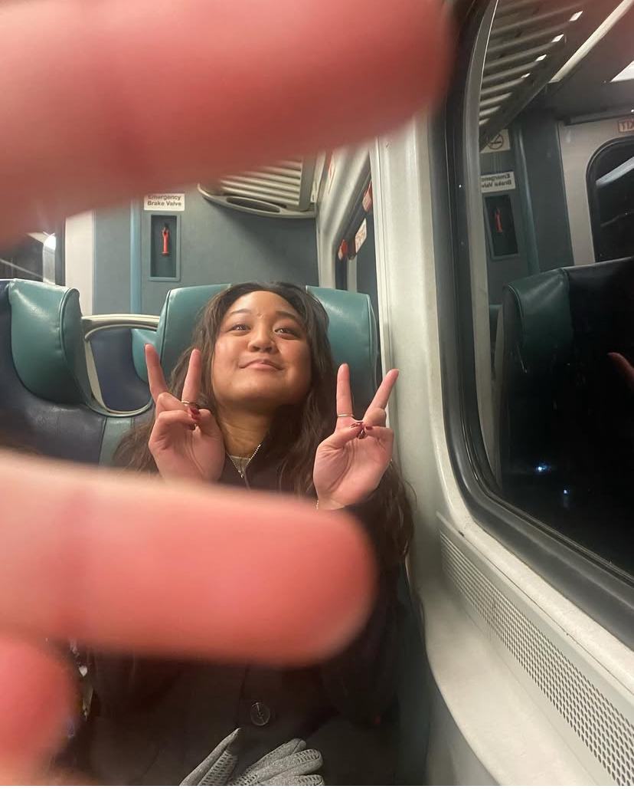
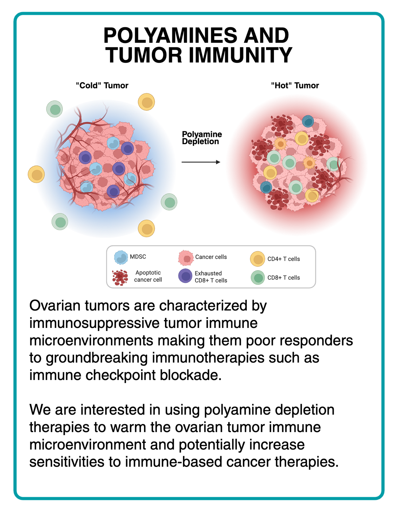
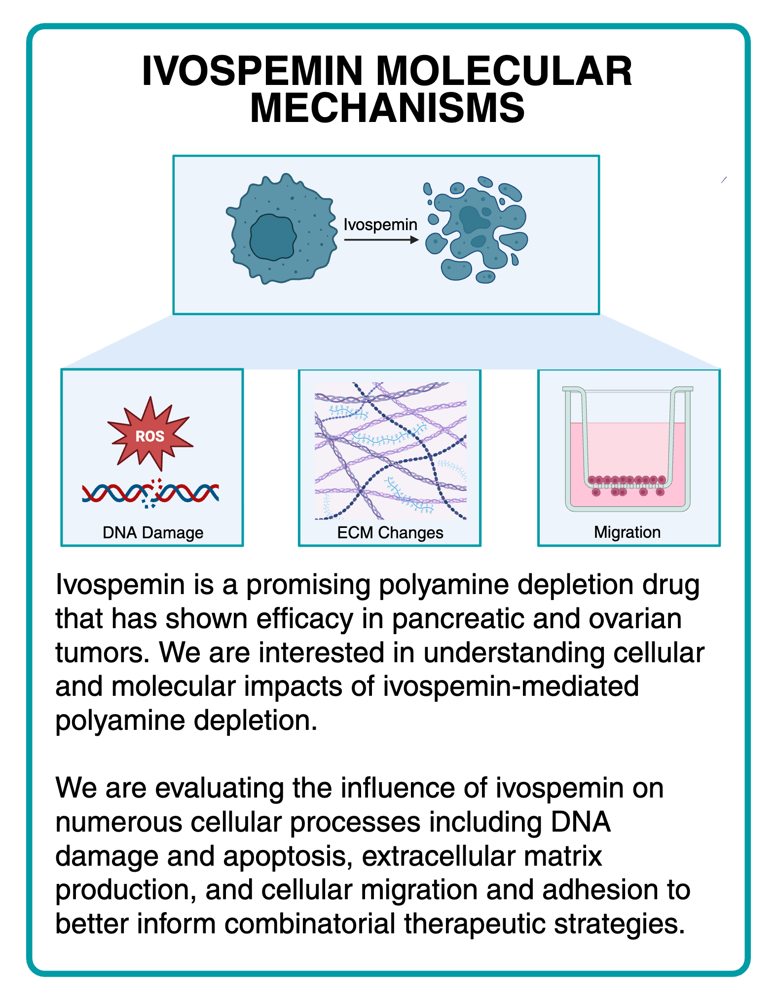
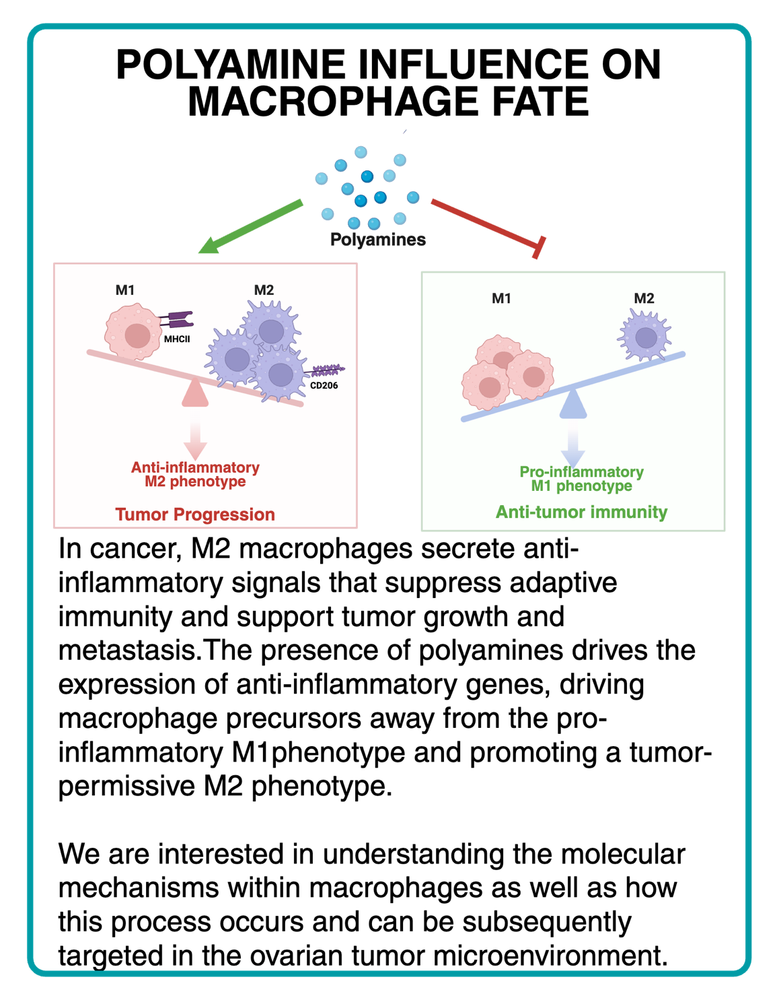
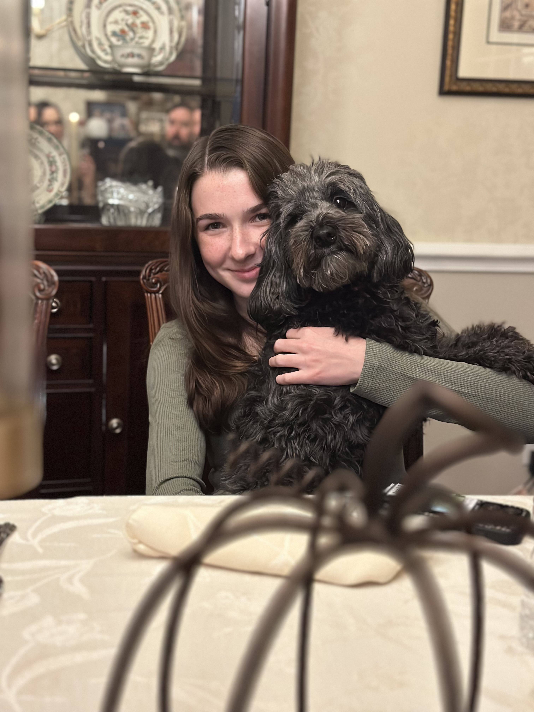
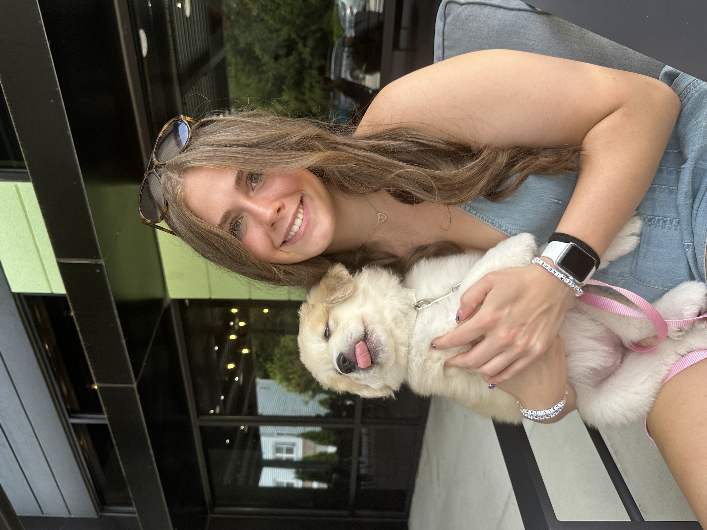

Lauren Imasa
Class of 2026 | Hauber Fellow
Lauren completed a BS in Biology/Psychology.
Research Technician at New York Institute of Technology.



Cassie is interested in cancer biology and tumor immunology. She loves coffee, houseplants, and a good book. Lives by the three Ps of life: ponies, polyamines, and potatoes.
Current Project: Herding cats

Honors biochemistry major minoring in forensic science with plans to pursue further education in laboratory sciences after graduation. She loves music, dogs, reading, and VDJ recombination. A fun fact is that she lived next to an 1800s graveyard for twelve years and despite being from Buffalo, she is allergic to the cold.
Current Project: Honors Thesis: Impact of polyamine depletion via ivospemin on metastasis

Biology major with intention of going to Veterinary school. She loves all animals, volleyball, working out, baking/cooking, and spending time with family and friends. She loves animals so much she once tried to “rescue” someone else’s dog… while the owner was still holding the leash.
Current Project: Gut microbiome differences between domesticated and wild horses
Honors BioHealth Major, Concentration in Biotech & Biopharma. Plans to pursue graduate school and conduct research in bioengineering after graduation! She loves going to museums, trying new restaurants/cafes, hiking, and thrifting. She used to own a motorcycle and even survived a crash once!
Current Project: Transcriptional Consequences of Polyamine Depletion on Ovarian Cancer Cells
BioHealth major [concentration in Biotech and Biopharma] and minoring in Math and Chemistry with plans to go to Grad school and pursue academic research. She loves reading sci-fi, puzzling, finding and going to cute cafes, and NK-cells. She can (and previously has done so) finish a 1000-piece puzzle in a day yet a basket of laundry will take her three.
Current Project: Polyamine-mediated macrophage polarization

Biology major minoring in Health and the Human Experience with plans to go to medical school and become an anesthesiologist. She likes to travel, spend time with family and friends, bake, and try new workout classes! She was in a Star Wars short as a child!
Current Project: Ivospemin and chemotherapy synergy
We are currently closed to new students for the 2026-2027 academic year.
If you are a LUM student interested in research during the 2027-2028 academic year, feel free to email Dr. Holbert to learn about the application process.